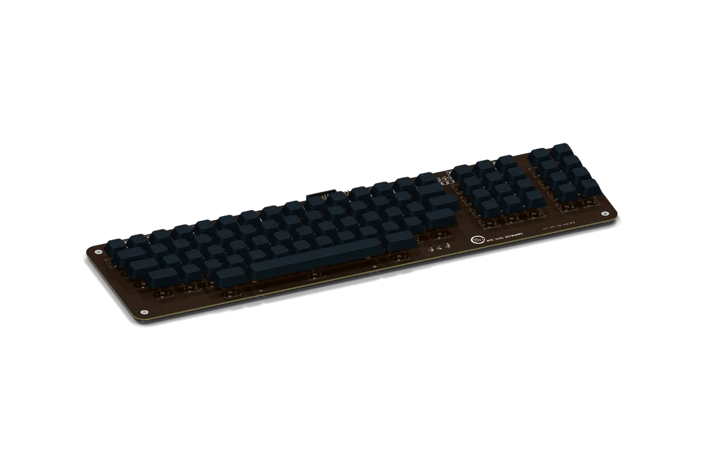
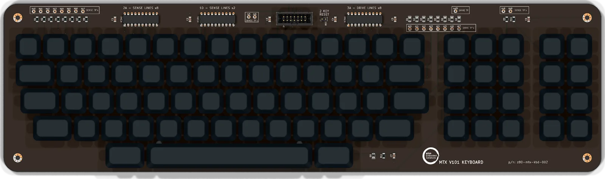
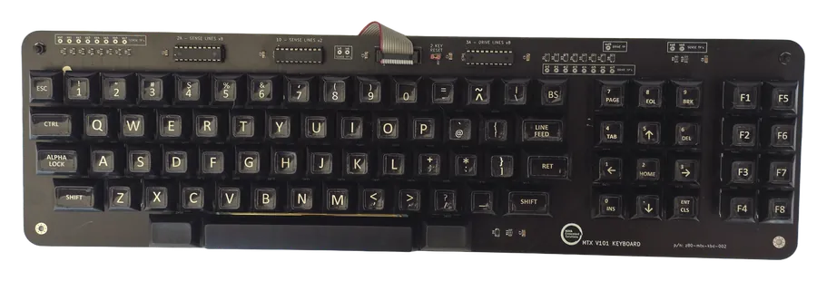
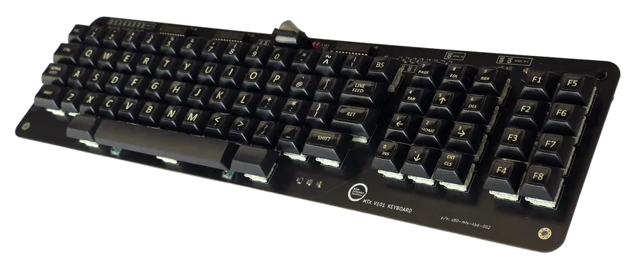
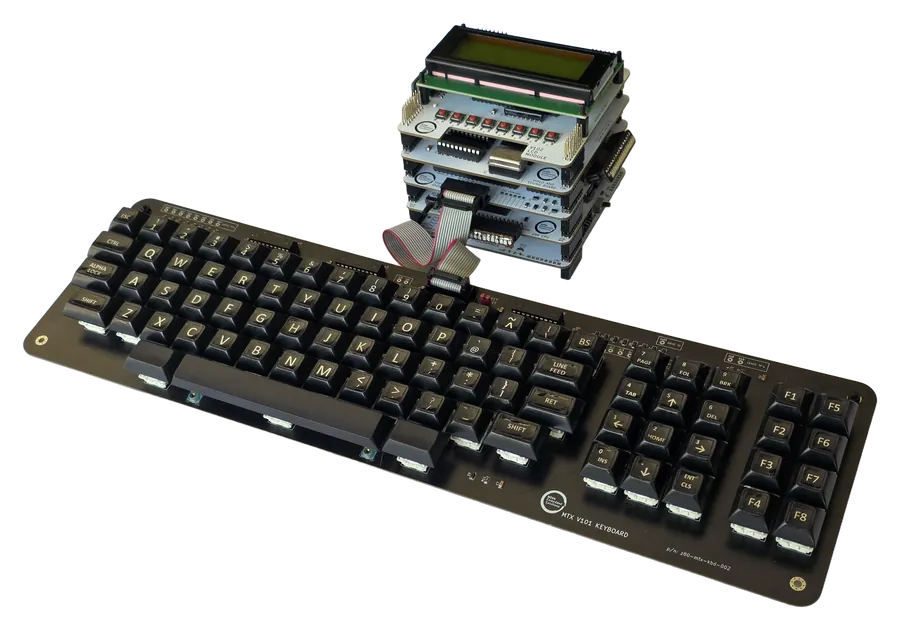
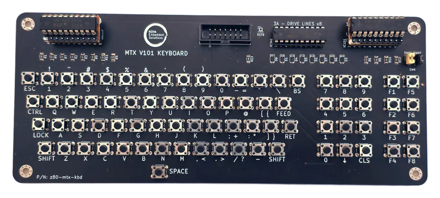

Z80-MTX-KBD-002
MTX keyboard
A full-travel keyboard laid out as an 8 × 10 matrix, read just as the MTX reads its own.
- Matrix
- 8 drive lines × 10 sense lines
- Keys
- 79, Cherry MX Red, DSA caps
- Ports
- OUT 05h drive, IN 05h and 06h sense
- Reset
- Two keys together, or a jumper to disable
- Size
- 425 × 120 mm, family v101

What's on the board

How it works
- OUT (05h) latches a drive pattern into a 74HC273, which pulls one or more of the eight rows low through diodes
- Ten sense lines with 10 k pull-ups show which keys in the driven rows are down
- IN (05h) reads sense lines 0–7 and IN (06h) reads lines 8 and 9, each through a 74HC244
- One ribbon cable to the I/O board carries data, strobes, power and reset
What it took
- Rev 003: buffer wiring changed and debounce capacitors added
- Full-travel Cherry MX Red switches with DSA keycaps
- Reset needs both reset keys held together, then passes through a debounce to the bus KBDRST line
- Test points on every drive and sense line
Schematic
Tap to open it full screen, then pinch, scroll or drag to explore. It stays sharp at any zoom.
Photos and files



